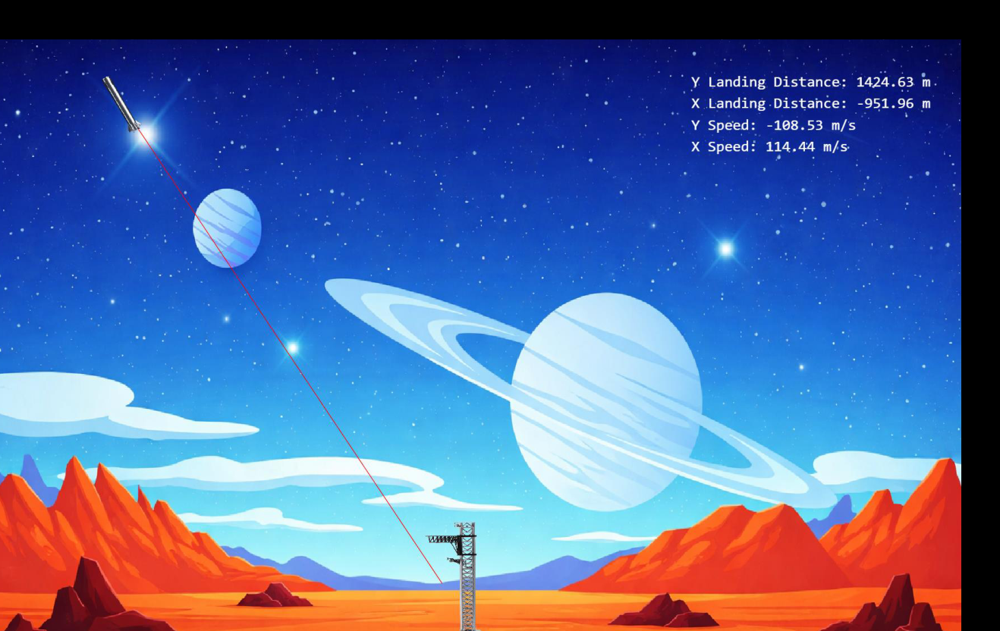
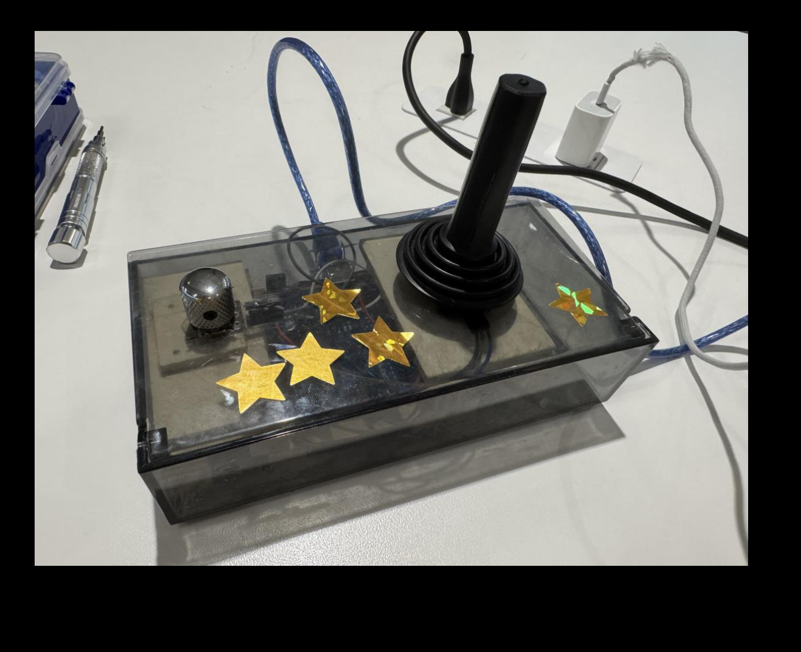
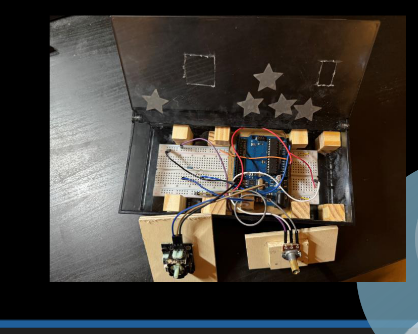
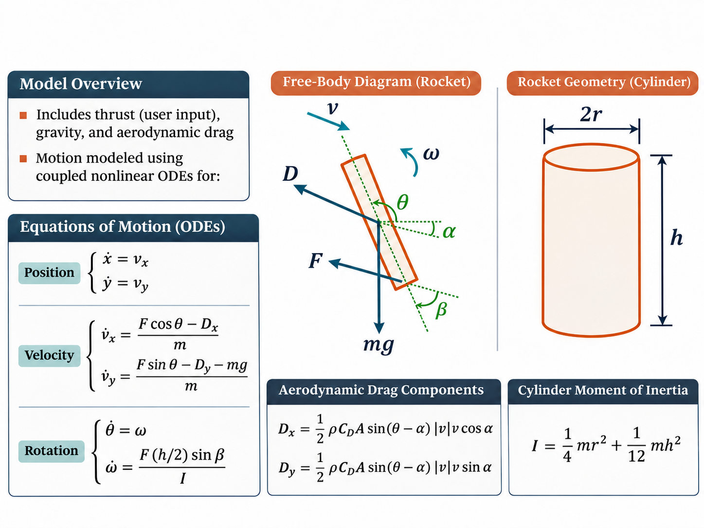
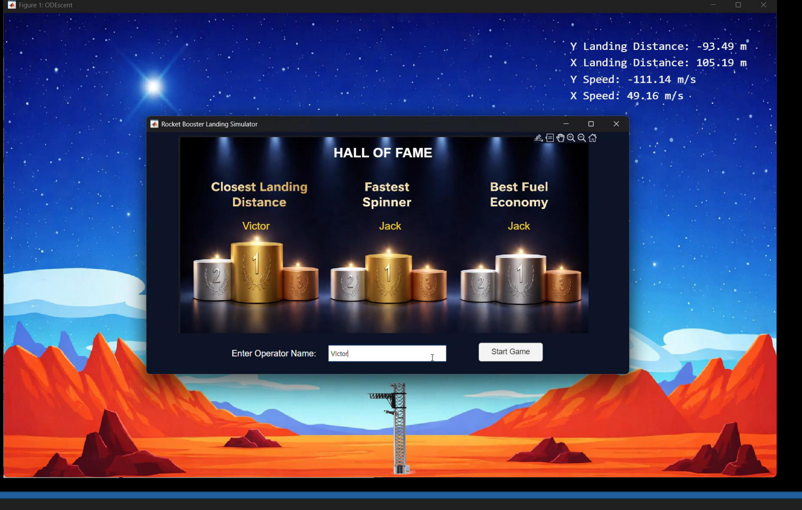

A physics-driven, interactive rocket landing game combining a six-state dynamic model, classic fourth-order Runge–Kutta integration, and real-time inputs from a custom Arduino-based controller.

A real-time numerical model translated into a playable, physically controlled landing challenge.
Guide a descending rocket booster toward a catch tower while controlling thrust and orientation. Successful landing depends on achieving acceptable position, vertical and horizontal velocity, rotation and angular speed near the target.
The simulator uses a stylized planetary environment and adds a competitive element through a Hall of Fame display.
Arduino continuously reads the controller's analog signals. MATLAB requests and receives control data over a serial connection, computes thrust and torque, advances the rocket state with a classic RK4 solver, and updates the rendered gameplay scene.
Work on the project covered dynamics modelling, numerical integration, graphical performance and the physical controller interface.
A physical player interface brings tangible input into the simulated rocket dynamics.


The controller uses an analog joystick and rotary potentiometer connected to the Arduino. The sketch reads analog pins A0 and A1, applies a small dead-zone filter and communicates the resulting control values to MATLAB when polled.
Coupled ordinary differential equations govern the booster's motion in a two-dimensional simulation.

The dynamic state includes horizontal and vertical position (x, y), velocity (vx, vy), orientation (θ), and angular velocity (ω). Translational acceleration depends on applied thrust, aerodynamic drag, rocket mass and gravity.
Thrust-vector deflection creates a moment that changes the rocket's angular velocity and orientation. A simplified cylindrical mass model provides the moment of inertia, while tuning helped balance physical behavior with playability.
Fourth-order Runge–Kutta evaluates the model across four stages to advance the six-state system.
The classic weighted four-stage RK4 update computes the next position, linear velocity, angle and angular velocity from the current state and the applied controls. The integration step in the supplied MATLAB code is 0.05 seconds.
MATLAB initiates data exchange through a serial request, Arduino polls its analog inputs and sends back the two control values, and MATLAB updates the dynamic model and displayed scene. The presentation reports a 50 Hz game refresh rate; that value is distinct from the 0.05-second numerical integration step.
Live numerical telemetry and player rankings turn the underlying physics into interactive feedback.

Landing success is assessed by checking proximity to the catcher and tolerances on orientation, translational speed and angular speed. A crash or out-of-bounds event ends the round, allowing another attempt.
The Hall of Fame tracks the closest landing distance, fastest angular spin and fuel economy. A stored MATLAB score structure preserves player entries for subsequent rounds.
The software, hardware, numerical method and user experience were guided by defined project rules.
Use fourth-order Runge–Kutta to solve the coupled nonlinear motion equations, rather than relying solely on built-in ODE solvers.
Serial transfer of real-time user inputs was required. The Arduino sketch polls the controls and serial interface rather than using interrupts.
Gameplay required an on-screen update rate of at least 20 Hz. The final presentation reported 50 Hz refresh.
A successful catch requires the booster to reach the tower within position, orientation, horizontal and vertical velocity, and angular-speed tolerances.
Correctly positioning and rotating the booster sprite and engine flame required matching screen transformations to the numerical state. Repeated creation and deletion of graphics objects reduced performance; transform-based flame rendering was adopted to improve efficiency.
A strictly realistic landing challenge proved difficult to play. Thrust scaling, angular response, landing tolerances and the catch-tower target region were tuned to create a more accessible experience without removing the core numerical dynamics.